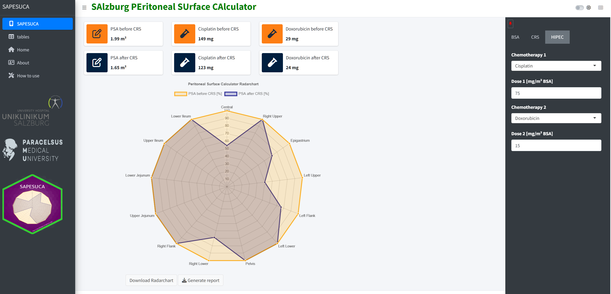

SAPESUCA

Salzburg Peritoneal Surface Calculator
An academic, peer-reviewed tool for individualized calculation of the peritoneal surface area. The app is provided free of charge for scientific and clinical use.

Salzburg Peritoneal Surface Calculator
An academic, peer-reviewed tool for individualized calculation of the peritoneal surface area. The app is provided free of charge for scientific and clinical use.